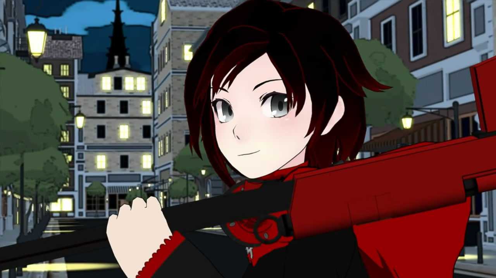
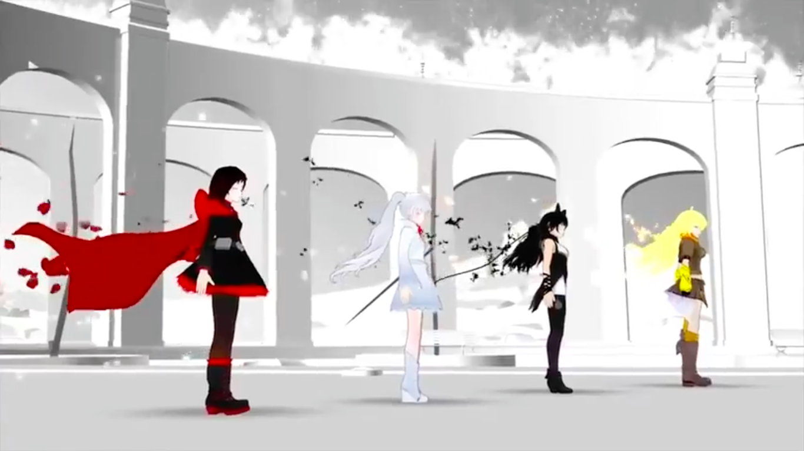
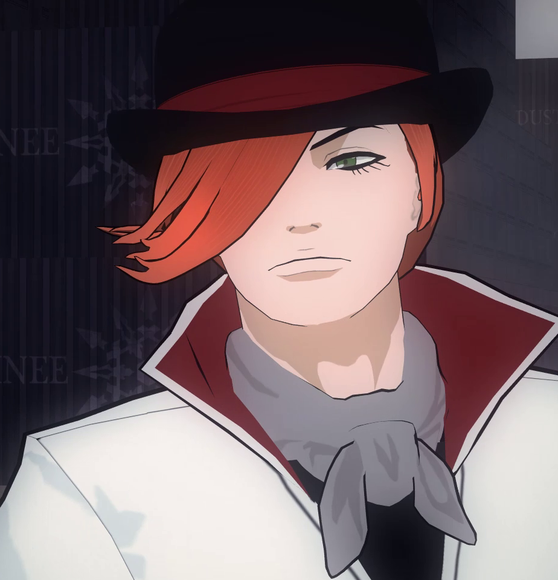
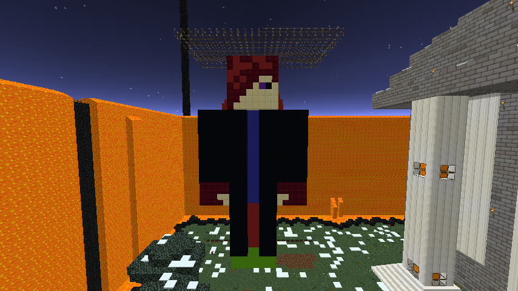
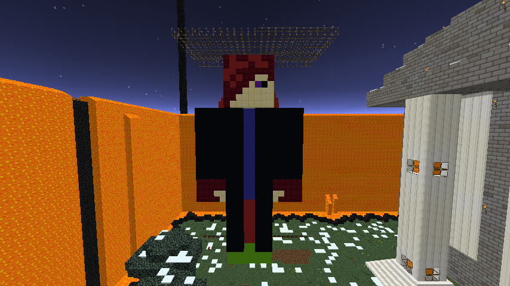

Ruby Rose
This page is about my Favorite Anime character, Ruby Rose, from the hit anime, RWBY
The Girl With Silver Eyes
Ruby is the daughter of Summer Rose and Taiyang Xiao Long, as well as the younger half-sister of Yang Xiao Long, with whom she was raised on the island of Patch. She wears a long sleeved thick black blouse with a high collar and red trim on the sleeves, a black waist cincher with red lacing up the front, and a black skirt with red trim. She also wears a pair of thick black stockings and black combat boots with red laces, red trim around the top and red soles. Her outfit is topped by a red hooded cloak fastened to her shoulder by cross shaped pins. Her emblem appears as a large silver brooch and is pinned to a wide black belt slung around her hips on an angle, which also has bullets and a pouch attached.
When she was very young, Yang would read her fairy tales every night before bed, filled with the deeds of great heroes; this would later inspire Ruby to become a Huntress. One day, Summer went missing while on a mission. Yang said that, although Ruby was "really torn up" by the incident, she was too young to really understand what was happening. Shortly after Summer's disappearance, Yang brought Ruby with her to an abandoned building in order to find clues about the whereabouts of Yang's mother, Raven Branwen. During the search, they were almost killed by Beowolves, but were saved by their uncle Qrow Branwen, which only fueled her desire to become a Huntress. Then 1 night while she was at her uncle's, not Qrow, dust shop and she was reading while it was being robbed. She got tapped on her shoulder and turned to see a man with red sunglasses and a red sword telling her to put her hands up, She responded by kicking the guy to the wall. Then Roman, the big man behind the robbery, sent another thug after her, but same result happened. She then flew out the window bringing two guys with her.
To achieve this, she studied at Signal Academy, where she built and learned to use her high-caliber sniper scythe, Crescent Rose, under the tutelage of her uncle Qrow.
This is my most favorite anime character, but this is no normal Japanese anime, this is a western anime, otherwise known as Psuedo.
This picture shows her and her friends (shown left to right) Weiss Schne, Blake Belladonna, and her sister, Yang. They never let each other down, they always find the answers to their problems, no matter how hard it is.
As they fight to save the world from destruction, they cross paths with a man named Roman Torchwick.
As Ruby knows who this is. Ruby tries to take down The White Fang with Blake, Yang, and Weiss. Little do they know that Blake used to be apart of The White Fang. She is also a Faunus. The race that had started The White Fang to gain equal rights. They gained equal rights, but not the way they thought they would. Blake though it was strange that the Faunus were followng the orders of a human. Later Ruby finds out that its not all about The White Fang, its about a woman that has godlike powers, Salem. Then Ruby made it her objective to defeat Salem as she learns to master her mysterious powers that surfaced when she saw that Phyrra had gotten killed on the top of Beacon Tower. She first needed to help her uncle Qrow because while they were fighting Tieal, Qrow had gotten grazed and poisoned. They then were fighting a grimm in a village when they had defeaten it and some airships from one nearest village had seen a smoke signal while they were on patrol. As they got to the village, the patrol men had rushed Qrow into a room and healed him. Ruby wrote yet another letter to Yang to explain what had happened, and to explain that she had gotten to Mistral to meet up with Professor Lionheart of Heaven Academy. But it turns out that Professor Lionheart is working with Salem.

 
